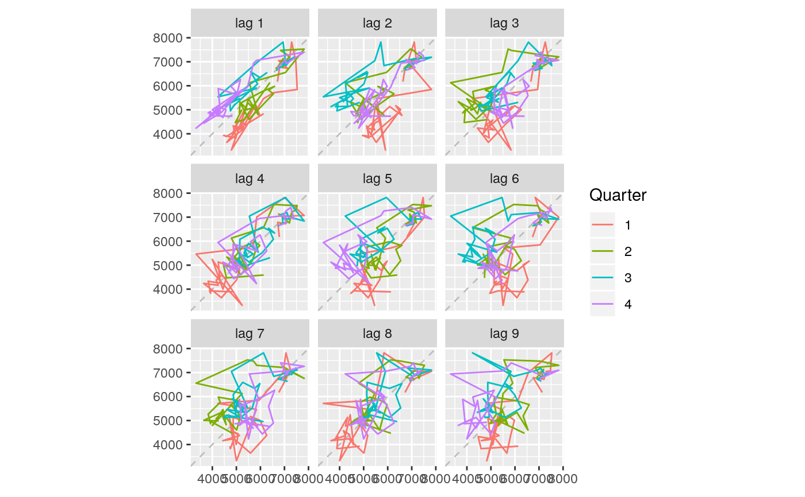
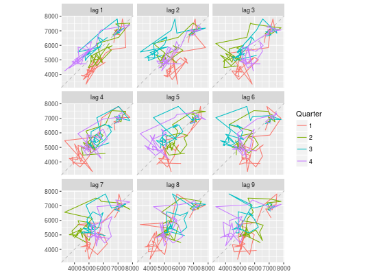
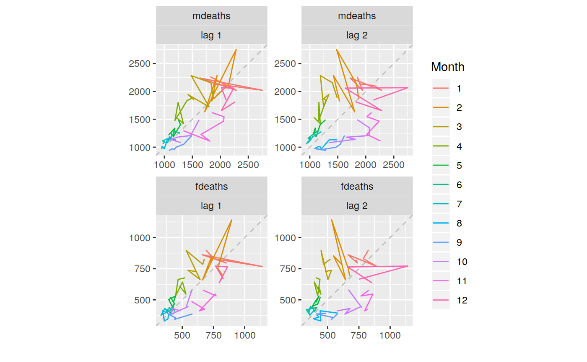
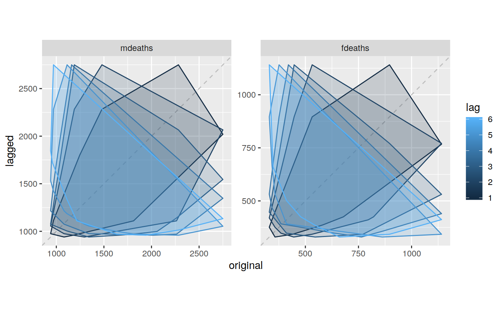
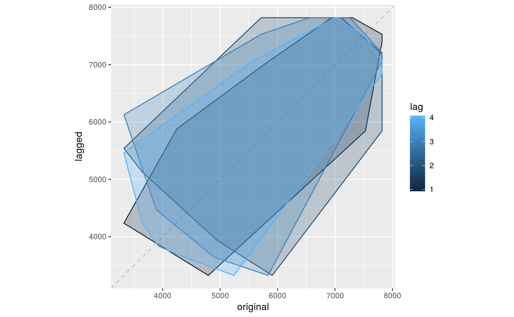

Plots a lag plot using ggplot.
gglagplot(x, lags = ifelse(frequency(x) > 9, 16, 9), set.lags = 1:lags, diag = TRUE, diag.col = "gray", do.lines = TRUE, colour = TRUE, continuous = frequency(x) > 12, labels = FALSE, seasonal = TRUE, ...) gglagchull(x, lags = ifelse(frequency(x) > 1, min(12, frequency(x)), 4), set.lags = 1:lags, diag = TRUE, diag.col = "gray", ...)
| x | a time series object (type |
|---|---|
| lags | number of lag plots desired, see arg set.lags. |
| set.lags | vector of positive integers specifying which lags to use. |
| diag | logical indicating if the x=y diagonal should be drawn. |
| diag.col | color to be used for the diagonal if(diag). |
| do.lines | if TRUE, lines will be drawn, otherwise points will be drawn. |
| colour | logical indicating if lines should be coloured. |
| continuous | Should the colour scheme for years be continuous or discrete? |
| labels | logical indicating if labels should be used. |
| seasonal | Should the line colour be based on seasonal characteristics (TRUE), or sequential (FALSE). |
| … | Not used (for consistency with lag.plot) |
None.
“gglagplot” will plot time series against lagged versions of themselves. Helps visualising 'auto-dependence' even when auto-correlations vanish. “gglagchull” will layer convex hulls of the lags, layered on a single plot. This helps visualise the change in 'auto-dependence' as lags increase.
gglagplot(woolyrnq)gglagplot(woolyrnq,seasonal=FALSE)lungDeaths <- cbind(mdeaths, fdeaths) gglagplot(lungDeaths, lags=2)gglagchull(lungDeaths, lags=6)gglagchull(woolyrnq)